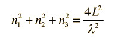

Photon Energy Density
The behavior of a collection of photons depends upon the distribution of energy among the photons:
Since photons are bosons, the distribution function is the Bose-Einstein distribution

where the normalization constant A=1 for photons.
This distribution determines the probability that a given energy state will be occupied, but must be multiplied by the density of states function to weight the probabability by the number of states available at a given energy.
The determination of how many ways there are to obtain an energy in an incremental energy range dE can be approached as the number of possible standing waves in a cubical box, which gives the relationship
|  |
|

The Rayleigh scheme for counting modes. | Treating the "quantum numbers" n as a space such that a given set of n values determines a point in that space, you can argue that the number of possible states is proportional to the "volume" in "n-space".
It is convenient to define a radius R in n-space: |
Using the photon energy
the energy can be expressed in terms of R and vice versa.
The n-space associated with the standing wave solutions involves only positive values of n, so the volume must be divided by 8. It then must be multiplied by 2 to account for the two planes of polarization of the photons. The number of values is then
The number of states per unit volume is
The final density of states as a function of energy is then the deriviative of this population with respect to energy
This represents the number of photons per unit volume per unit energy at energy E. This energy density is a factor in thermal radiation from a cavity. Note that the result is independent of the dimension L which was chosen above, showing that the expression can be applied to a region of space at equilibrium.
The density of states in terms of frequency or wavelength can be obtained by expressing the number of states per unit volume in terms of frequency or wavelength. Taking the appropriate derivative then puts them in the form commonly used in the treatment of blackbody radiation.
| Planck radiation formula |
Quantum statistics concepts
References
Richtmyer, et al.
Ch. 5
Rohlf
Sec 12.6
| HyperPhysics***** Quantum Physics | R Nave |